# 云原生 docker + k8s + springboot
# 云原生的本质
根据微服务将应用进行细分，将每一部分打包放入对应的容器，动态统筹管理容器，实现资源利用最大化。
# 什么是 Docker
Docker 是 Docker 公司开源的一种最流行的容器实现方案，极大方便了应用服务部署。
Docker 可以将应用、配置、和环境打包，形成了一个独立的类似于 iOS APP 形式的 应用，此应用可以直接分发到任意一个支持 Docker 的环境中，通过简单的命令即可运行。
Docker 使得容器化技术使用非常方便，极大地推进了容器行业的发展与容器技术标准化。
docker 口号： build once, run anywhere
# Docker 的优势
- 环境一致性
- 资源独立与隔离
- 轻量化
# 通过 docker 容器配置 Nginx 静态网页
从 docker 仓库下载具有默认 Nginx 配置的容器：
docker pull nginx |
现在有了镜像，但是镜像和容器的关系就像类和实例，要真正运行还要创建一个容器：
docker run --name docker-nginx -p 80:80 nginx |
参数说明：
- run 是创建新容器的命令
- --name 标志是指定容器名称的方式。如果为空，将分配一个生成的名称。
- -p 以 - p local-machine-port:internal-container-port 的格式指定公开的端口，比如这里将容器中的端口：80 映射到宿主机的端口：80
- nginx 是镜像名称，也就是刚刚 pull 下来的镜像，没有 tag 表示用最新 (latest)
此时在浏览器输入本地 ip 可看到 nginx 默认登录界面：
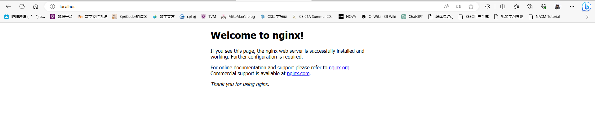
此时必须用 CTRL+c 在命令行中停止容器运行。可以使用 docker ps -a 查看此时的容器状态。
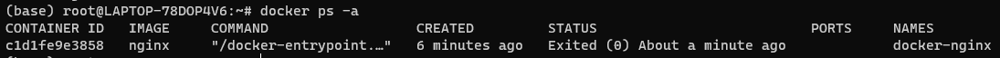
可以使用
docker rm -vf docker-nginx |
删除现有的 dorker-nginx 容器。
# Daemon 模式下运行
上面启动的容器还未与 terminal 分离，必须手动 CTRL+c 停止运行 才能输入后续指令，而在 daemon 模式下我们可以将容器交给 Daemon 进程，即一个守护进程托管，让其在后台运行。
创建一个保存网页内容的文件夹：
mkdir -p ~/docker-nginx/html | |
cd ~/docker-nginx/html | |
vim index.html |
编写网页内容：
<html> | |
<head> | |
<title>Docker nginx Tutorial</title> | |
</head> | |
<body> | |
<div class="container"> | |
<h1>Hello World</h1> | |
<p>this page is provided by nginx</p> | |
</div> | |
</body> | |
</html> |
然后使用命令：
docker run --name docker-nginx -p 80:80 -d -v ~/docker-nginx/html:/usr/share/nginx/html nginx |
参数说明：
- -v 标志开启挂载功能，: 的左侧是服务器（宿主机）上的位置：右侧是链接到的容器内的位置
- -d 采用 daemon 模式
/usr/share/nginx/html是 nginx 服务器默认用于存储静态 HTML 网页和其他资源的位置，通常情况下会在这个目录中存放可由 Web 浏览器访问的 HTML 文件、CSS 文件、JavaScript 文件和图像文件等。
结果：
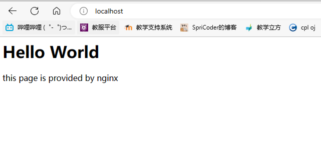
# 使用 Dockerfile 创建本地镜像
# 什么是 Dockerfile
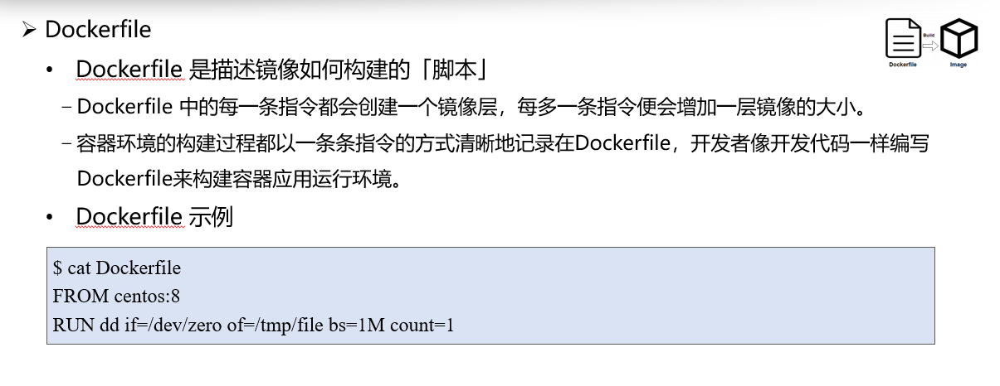
# 使用 Dockerfile 创建 2048 镜像并运行
Dockerfile 的内容如下：
# Pull base image. | |
FROM nginx:latest | |
COPY 2048-master /usr/share/nginx/html |
在 Dockerfile 的同级目录下存放了 2048-master 文件夹，其中包含了 2048 网页版的资源
使用命令
docker build -t my-2048 . |
创建一个名为 my-2048 的镜像 最后的。表示 Dockerfile 在当前目录下。
-t 指定镜像的名字
然后使用
docker run --name 2048 -d -p 80:80 my-2048 |
创建并启动一个容器
此时打开 localhost：
# Docker 镜像管理
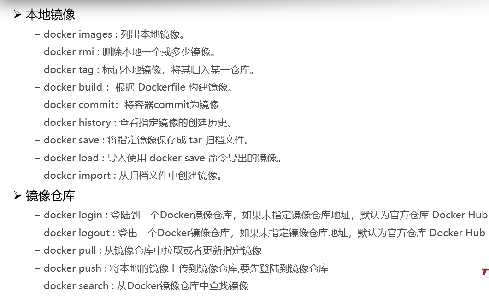
# Docker 容器管理
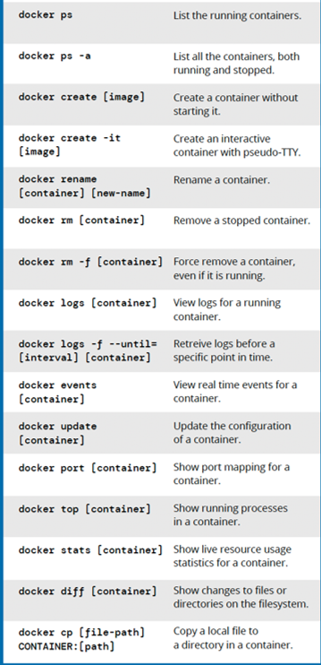
# Docker 原理
# Docker 组成架构
Docker 采用 C/S 架构，client 通过接口与 Server 进程通信实现容器的构建，运行和发布。
Docker 由五个部分组成
－Docker Client 客户端，负责向服务端（Docker Daemon 守护进程）发起请求
－Docker Daemon 守护进程，负责 从 Docker Registry 下载 Docker 镜像和通过 Docker 镜像 启动 Docker 容器
－Docker Registry 仓库，负责存储 Docker 镜像
－Docker Container 容器
－Docker Image 镜像
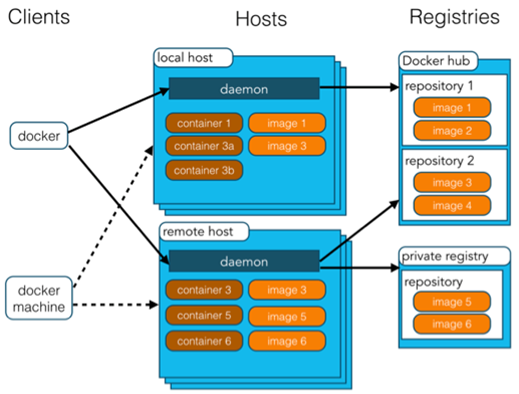
# Docker 运行容器流程
-
Docker Client 执行 docker run，Docker Daemon 收到来自 client 的请求；
-
Docker Daemon 优先查找本地镜像，如果本地没有，Docker daemon 会从远端镜像仓库拉取所需镜像；
-
启动 Linux Namespace 配置，设置指定的 Cgroups 参数，挂载 rootfs（容器镜像），切换进程的根目录；
-
容器运行。
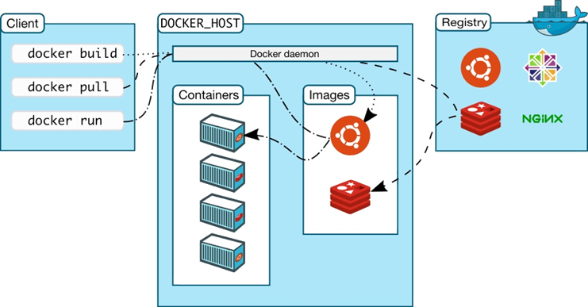
# Docker 容器文件系统
Docker 容器的 rootfs 使用的是 UnionFS（联合文件系统）。
UnionFS 是通过联合挂载多个文件目录得到的一个完整的文件系统。容器 rootfs 看起来是一个可读、可写的具备完整功能的独立文件系统，但实际上由多层只读层和一个专属于该容器的读写层联合挂载而成。
Linux 中支持的 UnionFS 实现有 overlay2、aufs、btrfs，其中最常用的就是 overlay2。
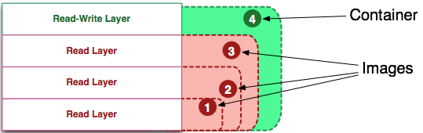
在准备容器 rootfs 时联合挂载用到的多层目录是哪来的呢？
－读写层，每个容器都有自己专属的读写层，该层由 docker 在创建此容器时创建的。
－只读层，每个容器的 rootfs 都会包含好几层只读层，该层由 docker 在拉取镜像时将镜像中的各层解压到 docker 的数据目录得到的。
总结
－容器镜像与容器 rootfs 的关联
Docker 拉取镜像解压到 docker 数据目录后得到只读层；
Docker 创建容器时使用数据目录中的读写层联合挂载得到容器 rootfs
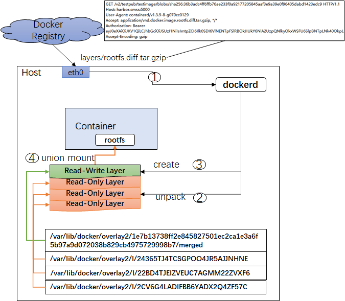
# kubernetes
# 什么是 kubernetes
kubernetes 是开源的容器集群管理项目，诞生于 2014 年，有 Google 公司发起，试图为基于容器的应用部署和管理打造一个强大引擎。使用 go 语言构造。
- 一个基于容器技术的分布式架构领先方案
- 一个生产级容器编排工具
- 一个完备的分布式学习通支撑平台
竞品： Mesos， Docker Swarm
我们在应用容器化的过程中会涉及到封装、调度单容器，也会涉及到解决各个容器间的类型关系，比如 web 容器会涉及到与 DB 容器的交互，可以通过建立 “link” 来将 DB 容器中的信息注入到 web 容器中。但这样做的缺陷在于缺少普适性，随着系统的扩大，容器间的 “link” 会越来越复杂。
Kubernetes 的优势就在于：从设计之初就以统一的方式定义任务之间的各种关系， 并且为将来支持更多种类的关系留有余地，能够按照用户的意愿和整个系统的规则，完全自动化地处理好容器之间的各种关系，这个过程也就是编排。而其他很多集群管理项目（比如 Yarn、Mesos，以及 Swarm）擅长的，把一个容器按规则，放置在某个最佳节点上运行的功能则称为调度。
容器本质是进程，那 Kubernetes 作为具有普遍意义的容器编排工具，就是云操作系统。
理解 Kubernetes 设计理念是学习 Kubernetes 的前提。我们需要聚焦在两个问题：
l 如何处理应用与应用之间的关系？
l 如何恰当的容器化一个应用？
第一个问题，应用与应用之间的关系可以细化为容器间的关系，具体来说是两类：一类关系是 “紧密交互” 的，即：这些应用之间需要频繁交互、访问，或者会直接通过本地文件进行信息交换。Kubernetes 把这类关系涉及到的一组容器划分为一个 “ Pod ”（ Kuberntes 最小调度单位），在这里面可以进行高效信息交换。
另一类关系则是常见的应用间的普通访问，Kuberntes 通过定义 “服务对象” 来描述。比如 web 应用和数据库应用的交互，涉及到固定 IP 地址和端口以负载均衡的方式访问，就产生了 Service 对象来处理；加密授权的关系需求，则可由 Secret 对象解决等等。
第二个问题，以 Pod 为基础为解决不同的场景需求衍生出了不同的解决方案，也就是基于 Pod 改进后的对象资源，称为 “编排对象”。比如被称为 DaemonSet 的对象资源，它可以像守护进程一样在每个宿主机上有且只能有一个 pod 副本；再比如 CronJob ，它专门用来描述定时任务等等。
如下图所示，由 “Pod” 产生各类 “编排对象”，再为解决各种关系问题产生了类似 Service、Ingress 等 “服务对象 ”。

# 架构
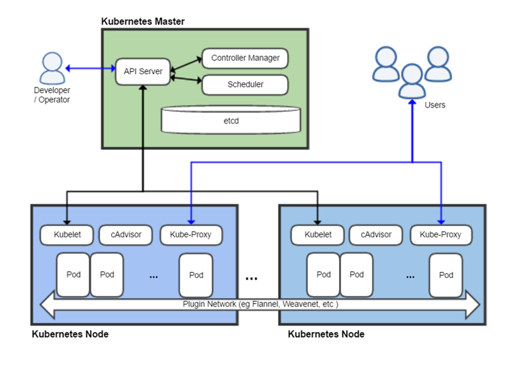
k8s 有一个 Master 节点负责与用户的通信和管理工作节点等工作，而每一个工作节点 (Node 节点) 对应一个真实的物理机或虚拟机，承担工作负载，Node 负责监控并汇报容器的状态，同时根据 Master 的要求管理容器生命周期。
master 节点组件
- API Server。K8S 的请求入口服务。API Server 负责接收 K8S 所有请求（来自 UI 界面或者 CLI 命令行工具），然后，API Server 根据用户的具体请求，去通知其他组件干活。
- Scheduler。K8S 所有 Worker Node 的调度器。当用户要部署服务时，Scheduler 会选择最合适的 Worker Node（服务器）来部署。
- Controller Manager。K8S 所有 Worker Node 的监控器。Controller Manager 有很多具体的 Controller，在文章 **Components of Kubernetes Architecture** 中提到的有 Node Controller、Service Controller、Volume Controller 等。Controller 负责监控和调整在 Worker Node 上部署的服务的状态，比如用户要求 A 服务部署 2 个副本，那么当其中一个服务挂了的时候，Controller 会马上调整，让 Scheduler 再选择一个 Worker Node 重新部署服务。
- etcd。K8S 的存储服务。etcd 存储了 K8S 的关键配置和用户配置，K8S 中仅 API Server 才具备读写权限，其他组件必须通过 API Server 的接口才能读写数据（见 **Kubernetes Works Like an Operating System**）。 --zhihu
node 节点组件
- Kubelet。Worker Node 的监视器，以及与 Master Node 的通讯器。Kubelet 是 Master Node 安插在 Worker Node 上的 “眼线”，它会定期向 Worker Node 汇报自己 Node 上运行的服务的状态，并接受来自 Master Node 的指示采取调整措施。
- Kube-Proxy。K8S 的网络代理。私以为称呼为 Network-Proxy 可能更适合？Kube-Proxy 负责 Node 在 K8S 的网络通讯、以及对外部网络流量的负载均衡。
- Container Runtime。Worker Node 的运行环境。即安装了容器化所需的软件环境确保容器化程序能够跑起来，比如 Docker Engine。大白话就是帮忙装好了 Docker 运行环境。
- Logging Layer。K8S 的监控状态收集器。私以为称呼为 Monitor 可能更合适？Logging Layer 负责采集 Node 上所有服务的 CPU、内存、磁盘、网络等监控项信息。
- Add-Ons。K8S 管理运维 Worker Node 的插件组件。有些文章认为 Worker Node 只有三大组件，不包含 Add-On，但笔者认为 K8S 系统提供了 Add-On 机制，让用户可以扩展更多定制化功能，是很不错的亮点。
# k8s 优势
- 强大的容器编排能力
- 轻量级
- 开放开源
- 优秀的 API 设计
- 基于微服务模式的多层资源抽象模型
- 可扩展性好
- 自动化程度高
- 部署支持多种环境
# k8s 常用命令
# create/apply
kubectl apply/create -f [FILE NAME]
kubectl create 属于
# get
kubectl get pods|replicationcontrollers|services|namespaces|nodes|...|events [options]
# describe
查看资源详细信息
# logs
查看 pod 内容器日志
# exec
在 pod 容器中执行命令
# edit
编辑资源
# delete
删除资源
# 故障检测
放张图备用
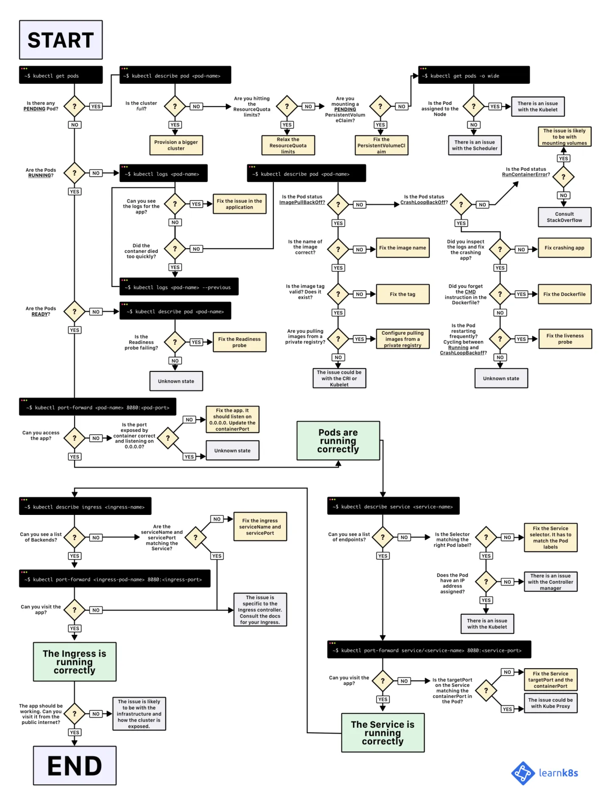
# Springboot 入门
# 特点
- 独立运行的 spring 项目 spring boot 可以以 jar 包的形式独立运行
- 内嵌 servlet 容器，应用无需打成 WAR 包。
- 提供 starter 简化 Maven 配置
- 提供了大量的自动配置
- 自带应用监控
- 无代码生成和 XML 配置